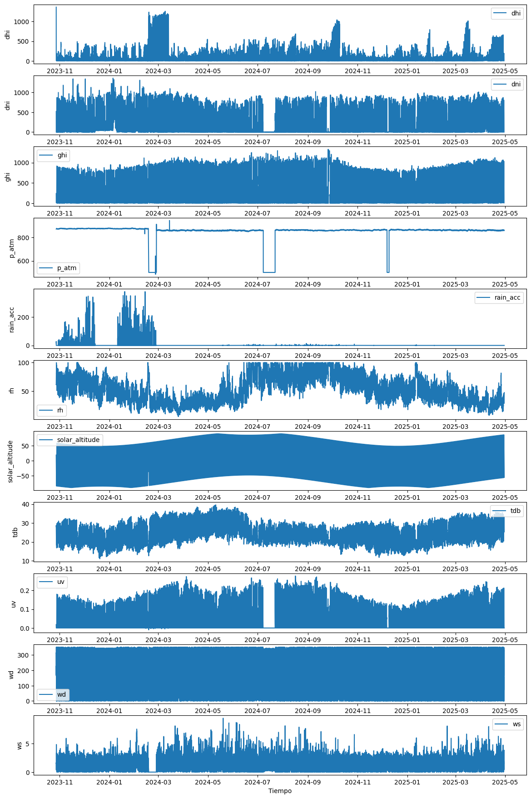
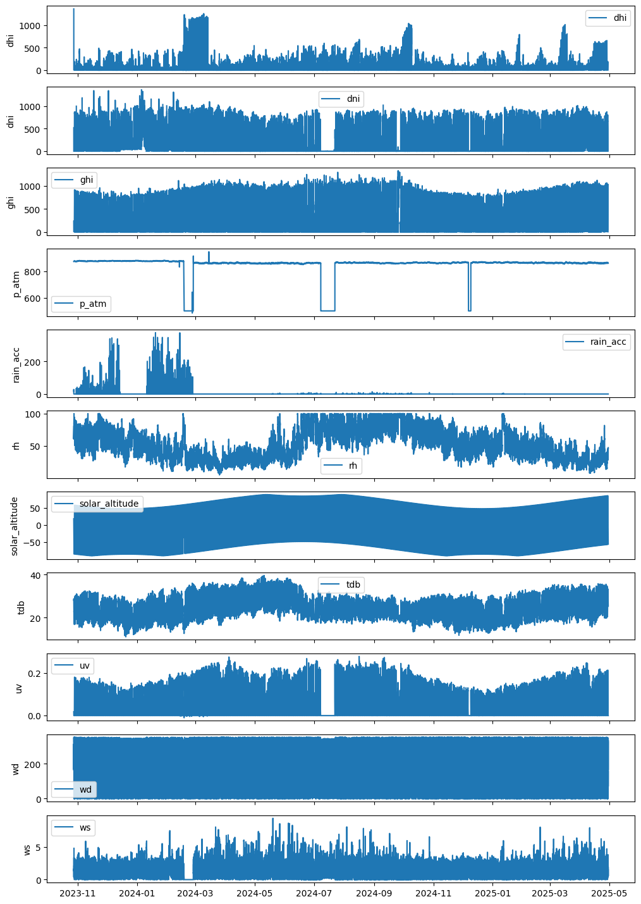
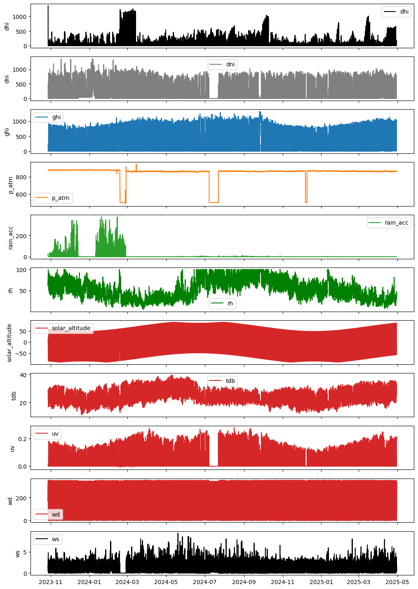
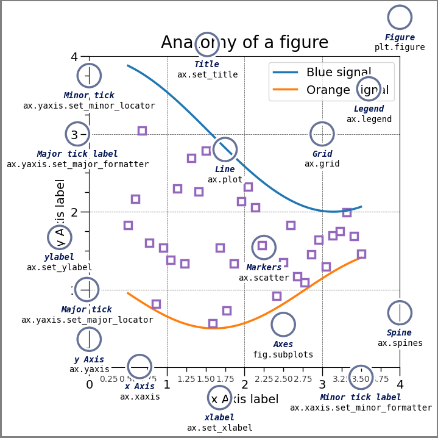

import pandas as pd
import matplotlib.pyplot as plt7 Tips
No uses nombres como df, df_algo, evita df y usa nombres cortos, sin mayúsculas, de preferencia sin guiones bajos, y que tengan un significado para ti y tu equipe de trabajo.
tmxhace referencia a temixco, es más corto y fácil de escribir
f = "../data/ClimaLab_2023-10-27_2025-04-30.parquet"
tmx = pd.read_parquet(f)
tmx.info()<class 'pandas.core.frame.DataFrame'>
DatetimeIndex: 79036 entries, 2023-10-27 16:40:00 to 2025-04-30 00:00:00
Data columns (total 11 columns):
# Column Non-Null Count Dtype
--- ------ -------------- -----
0 dhi 39186 non-null float64
1 dni 39043 non-null float64
2 ghi 39104 non-null float64
3 p_atm 79036 non-null float64
4 rain_acc 79036 non-null float64
5 rh 79036 non-null float64
6 solar_altitude 79036 non-null float64
7 tdb 79036 non-null float64
8 uv 79036 non-null float64
9 wd 79036 non-null float64
10 ws 79036 non-null float64
dtypes: float64(11)
memory usage: 7.2 MBMatplotlib y la programación orientada a objetos
¿Qué es la “programación orientada a objetos” (POO) en Matplotlib?
Matplotlib tiene dos “modos” de uso:
Modo procedural/estado global (pyplot puro): Usas funciones como plt.plot(…), plt.title(…), y Matplotlib va operando sobre “la figura actual” y “los ejes actuales”. Es rápido para bocetar.
Modo orientado a objetos (OO): Tú manipulas objetos explícitos: una Figure (la hoja) que contiene uno o varios Axes (los “sistemas de ejes” donde dibujas). A su vez, cada Axes contiene Artists (líneas, textos, parches). En vez de decir “pon título a lo actual”, le dices al objeto ax: “pon tu título”.
La siguiente gr’afica es posible
Peeero, no se recomienda hacerlo así.
# Variables esperadas en tmx:
# ['dhi', 'dni', 'ghi', 'p_atm', 'rain_acc', 'rh', 'solar_altitude', 'tdb', 'uv', 'wd', 'ws']
plt.figure(figsize=(14, 22))
# plt.subplot(11, 1, 1) es una llamada procedural que:
# Divide el “canvas” en una rejilla de 11 filas × 1 columna
# Activa (y devuelve) el subplot número 1 de esa rejilla (el de arriba del todo)
# --- 1) dhi ---
ax1 = plt.subplot(11, 1, 1)
plt.plot(tmx.index, tmx['dhi'], label='dhi')
plt.ylabel('dhi')
plt.legend()
# --- 2) dni ---
plt.subplot(11, 1, 2, sharex=ax1)
plt.plot(tmx.index, tmx['dni'], label='dni')
plt.ylabel('dni')
plt.legend()
# --- 3) ghi ---
plt.subplot(11, 1, 3, sharex=ax1)
plt.plot(tmx.index, tmx['ghi'], label='ghi')
plt.ylabel('ghi')
plt.legend()
# --- 4) p_atm ---
plt.subplot(11, 1, 4, sharex=ax1)
plt.plot(tmx.index, tmx['p_atm'], label='p_atm')
plt.ylabel('p_atm')
plt.legend()
# --- 5) rain_acc ---
plt.subplot(11, 1, 5, sharex=ax1)
plt.plot(tmx.index, tmx['rain_acc'], label='rain_acc')
plt.ylabel('rain_acc')
plt.legend()
# --- 6) rh ---
plt.subplot(11, 1, 6, sharex=ax1)
plt.plot(tmx.index, tmx['rh'], label='rh')
plt.ylabel('rh')
plt.legend()
# --- 7) solar_altitude ---
plt.subplot(11, 1, 7, sharex=ax1)
plt.plot(tmx.index, tmx['solar_altitude'], label='solar_altitude')
plt.ylabel('solar_altitude')
plt.legend()
# --- 8) tdb ---
plt.subplot(11, 1, 8, sharex=ax1)
plt.plot(tmx.index, tmx['tdb'], label='tdb')
plt.ylabel('tdb')
plt.legend(loc='upper right')
# --- 9) uv ---
plt.subplot(11, 1, 9, sharex=ax1)
plt.plot(tmx.index, tmx['uv'], label='uv')
plt.ylabel('uv')
plt.legend()
# --- 10) wd ---
plt.subplot(11, 1, 10, sharex=ax1)
plt.plot(tmx.index, tmx['wd'], label='wd')
plt.ylabel('wd')
plt.legend()
# --- 11) ws ---
plt.subplot(11, 1, 11, sharex=ax1)
plt.plot(tmx.index, tmx['ws'], label='ws')
plt.ylabel('ws')
plt.xlabel('Tiempo')
plt.legend()
Por qu’e escribir cuando puedes iterar
conceptos claves: - columnas, iterable - axs, iterable con len(columnas) objetos
columnas = tmx.columns
fig, axs = plt.subplots(len(columnas),1, figsize=(12,18),sharex=True)
for i,columna in enumerate(columnas):
axs[i].plot(tmx[columna],label=columna)
axs[i].legend()
axs[i].set_ylabel(columna)
columnas = tmx.columns
colores = ['black','gray','tab:blue','tab:orange','tab:green','green','tab:red','tab:red','tab:red','tab:red','black','gray','tab:blue','tab:orange','tab:green','green']
fig, axs = plt.subplots(len(columnas),1, figsize=(12,18),sharex=True)
for i,columna in enumerate(columnas):
axs[i].plot(tmx[columna],label=columna,color=colores[i])
axs[i].legend()
axs[i].set_ylabel(columna)
Es importante conocer la anatomia de una figura desde matplotlib y aprender los conceptos de POO, recomendamos aprender matplotlib antes de pasar a graficadores m’as avanzados como plotly o seaborn, por eso, te dejo la anatomy of a figure de la documentaci’on de matplotlib
https://matplotlib.org/stable/gallery/showcase/anatomy.html
import matplotlib.pyplot as plt
import numpy as np
from matplotlib.patches import Circle
from matplotlib.patheffects import withStroke
from matplotlib.ticker import AutoMinorLocator, MultipleLocator
royal_blue = [0, 20/256, 82/256]
# make the figure
np.random.seed(19680801)
X = np.linspace(0.5, 3.5, 100)
Y1 = 3+np.cos(X)
Y2 = 1+np.cos(1+X/0.75)/2
Y3 = np.random.uniform(Y1, Y2, len(X))
fig = plt.figure(figsize=(7.5, 7.5))
ax = fig.add_axes([0.2, 0.17, 0.68, 0.7], aspect=1)
ax.xaxis.set_major_locator(MultipleLocator(1.000))
ax.xaxis.set_minor_locator(AutoMinorLocator(4))
ax.yaxis.set_major_locator(MultipleLocator(1.000))
ax.yaxis.set_minor_locator(AutoMinorLocator(4))
ax.xaxis.set_minor_formatter("{x:.2f}")
ax.set_xlim(0, 4)
ax.set_ylim(0, 4)
ax.tick_params(which='major', width=1.0, length=10, labelsize=14)
ax.tick_params(which='minor', width=1.0, length=5, labelsize=10,
labelcolor='0.25')
ax.grid(linestyle="--", linewidth=0.5, color='.25', zorder=-10)
ax.plot(X, Y1, c='C0', lw=2.5, label="Blue signal", zorder=10)
ax.plot(X, Y2, c='C1', lw=2.5, label="Orange signal")
ax.plot(X[::3], Y3[::3], linewidth=0, markersize=9,
marker='s', markerfacecolor='none', markeredgecolor='C4',
markeredgewidth=2.5)
ax.set_title("Anatomy of a figure", fontsize=20, verticalalignment='bottom')
ax.set_xlabel("x Axis label", fontsize=14)
ax.set_ylabel("y Axis label", fontsize=14)
ax.legend(loc="upper right", fontsize=14)
# Annotate the figure
def annotate(x, y, text, code):
# Circle marker
c = Circle((x, y), radius=0.15, clip_on=False, zorder=10, linewidth=2.5,
edgecolor=royal_blue + [0.6], facecolor='none',
path_effects=[withStroke(linewidth=7, foreground='white')])
ax.add_artist(c)
# use path_effects as a background for the texts
# draw the path_effects and the colored text separately so that the
# path_effects cannot clip other texts
for path_effects in [[withStroke(linewidth=7, foreground='white')], []]:
color = 'white' if path_effects else royal_blue
ax.text(x, y-0.2, text, zorder=100,
ha='center', va='top', weight='bold', color=color,
style='italic', fontfamily='monospace',
path_effects=path_effects)
color = 'white' if path_effects else 'black'
ax.text(x, y-0.33, code, zorder=100,
ha='center', va='top', weight='normal', color=color,
fontfamily='monospace', fontsize='medium',
path_effects=path_effects)
annotate(3.5, -0.13, "Minor tick label", "ax.xaxis.set_minor_formatter")
annotate(-0.03, 1.0, "Major tick", "ax.yaxis.set_major_locator")
annotate(0.00, 3.75, "Minor tick", "ax.yaxis.set_minor_locator")
annotate(-0.15, 3.00, "Major tick label", "ax.yaxis.set_major_formatter")
annotate(1.68, -0.39, "xlabel", "ax.set_xlabel")
annotate(-0.38, 1.67, "ylabel", "ax.set_ylabel")
annotate(1.52, 4.15, "Title", "ax.set_title")
annotate(1.75, 2.80, "Line", "ax.plot")
annotate(2.25, 1.54, "Markers", "ax.scatter")
annotate(3.00, 3.00, "Grid", "ax.grid")
annotate(3.60, 3.58, "Legend", "ax.legend")
annotate(2.5, 0.55, "Axes", "fig.subplots")
annotate(4, 4.5, "Figure", "plt.figure")
annotate(0.65, 0.01, "x Axis", "ax.xaxis")
annotate(0, 0.36, "y Axis", "ax.yaxis")
annotate(4.0, 0.7, "Spine", "ax.spines")
# frame around figure
fig.patch.set(linewidth=4, edgecolor='0.5')
plt.show()
Matplotlib primero (fundamentos y control fino)
Es la base del ecosistema: todo lo que hace Seaborn/Plotly en 2D “pasa” por conceptos que nacen en Matplotlib (figura, ejes, artistas).
Enseña a pensar en la jerarquía Figure→Axes→Artists y en el estilo OO (control total del layout, ejes secundarios, anotaciones).
Si dominas Matplotlib, cualquier “rareza” de gráficos la puedes resolver.
Seaborn después (estadística y estética por defecto)
Acelera el análisis exploratorio: relplot, catplot, displot, pairplot, manejo integrado de DataFrames y variables categóricas/numéricas.
Te da buenos estilos por defecto y mapea variables a color/forma/tamaño fácilmente.
Ideal para enseñar comparaciones estadísticas y “long vs wide data” sin pelearte con bajo nivel.
Plotly al final (interactividad)
Añade hover, zoom, selección, exportación a HTML y gráficos 3D con poca fricción.
Perfecto para dashboards o entregar resultados interactivos a tomadores de decisión.
Una vez claros los conceptos de capas y ejes, la transición a objetos go.Figure/px es natural.